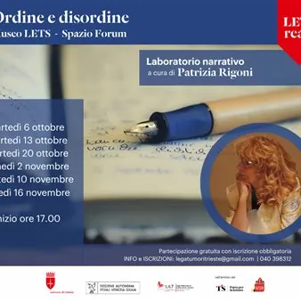

da mar 6 ott a lun 16 nov · dalle 17:00
Ordine e disordine
Laboratorio narrativo sei incontri dal 6 ottobre fino al 16 novembre cura di Patrizia Rigoni Nell’ambito delle attività del Patto di Trieste per la Lettura – che riconosce alla lettura e alla scrittura un valore sociale fondamentale, volto a migliorare il benessere individuale e…
 Indicazioni
Indicazioni
- Costi e prenotazioni
- Costo non indicato · Prenotazione non indicata
- Programma
- Programma da verificare. Apri la fonte ufficiale per orari e possibili aggiornamenti.
- In caso di maltempo
- Nessuna indicazione specifica pubblicata.
- Note
- Acquisito automaticamente dalla fonte.
L’EVENTO
Descrizione completa
Laboratorio narrativo
sei incontri dal 6 ottobre fino al 16 novembre
cura di Patrizia Rigoni Nell’ambito delle attività del Patto di Trieste per la Lettura – che riconosce alla lettura e alla scrittura un valore sociale fondamentale, volto a migliorare il benessere individuale e dell’intera comunità – la LILT – Lega Italiana per la Lotta contro i Tumori di Trieste, in collaborazione con il Comune di Trieste, propone, dopo il successo dell’edizione 2025, un secondo percorso narrativo dal titolo Ordine e disordine, composto da sei incontrisettimanali,per promuovere sostegno e confronto tra donne e uomini che vivono e hanno vissuto o accompagnato l’esperienza della malattia. Nei laboratori curati da Patrizia Rigoni, la letteratura e la poesia si mettono al servizio della conoscenza reciproca, dell’ascolto e della capacità di condividere, per diminuire il senso di solitudine e affrontare con più serenità momenti che sembrano appartenere soltanto alla propria sfera individuale. La possibilità di raccontare le proprie esperienze e di dare una forma scritta alle emozioni, nella libertà di un momento protetto e senza la paura di essere giudicati, può divenire nel gruppo un sollievo, un alleggerimento, una vera forma di “cura”. Le parole di scrittori e poeti accompagneranno una narrazione verso il recupero delle proprie esperienze, con l’obiettivo di mettere a fuoco e valorizzare le proprie risorse sentimentali, emotive e intellettuali. Il gruppo di lavoro si trasforma in un luogo-contenitore dove trovare fiducia in sé, ascolto, ma anche stimoli verso l’apertura agli altri, capacità di comprendere differenti percorsi, possibilità di sostegno e condivisione della propria esperienza. Il ciclo di incontri è destinato a chi ha fatto l’esperienza della malattia oncologica, ma anche a chi la sostiene e a chi l’ha sostenuta . Può comprendere da un minimo di 10 a un massimo di 20 persone. È preferibile sia confermata la volontà di seguire tutti gli incontri, per creare le condizioni indispensabili di condivisione e coesione.
Le date degli incontri sono: 6, 13, 20 ottobre – 2, 10, 16 novembre , sempre dalle 17.00 alle 19.30 nello Spazio Forum di Museo LETS di piazza Hortis 4.
Per ciascuno dei sei incontri in programma verrà consegnato in anticipo agli iscritti e alle iscritte un fascicolo composto da frammenti letterari e poetici per poter procedere negli esercizi di scrittura. La bibliografia sarà costruita coerentemente agli obiettivi concordati del percorso. La partecipazione è gratuita ma l’iscrizione è obbligatoria, scrivendo a legatumoritrieste@gmail.com o telefonando allo 040 39831 2 dal lunedì al venerdì dalle 9:00 alle 12:00 anche per chiedere ulteriori informazioni.
IL PROGRAMMA
Programma e orari
Appuntamenti raccolti dalle fonti elencate. Dove manca un orario, non è ancora disponibile in questa scheda.
Programma pubblicato
- Dal 2026-10-06 al 2026-11-16
INFORMAZIONI UTILI
Prima di partire
- Controllare la fonte prima di partire.
ORGANIZZAZIONE